●Ttk Widget の基本
- Ttk (Themed Tk) は Tk 8.5 から導入されたテーマ付きウィジェットのこと
- Ttk ウィジェットを使うと、テーマの変更で GUI の見た目を切り替えることができる
- Ttk には 18 個のウィジェットがあり、そのうちの 12 個は tk にもある
- Button, Checkbutton, Entry, Frame, Label, LabelFrame
- Menubutton, PanedWindow, Radiobutton, Scale, Scrollbar, Spinbox
- Ttk にしかないウィジェット
- Combobox, Notebook, Progressbar, Separator, Sizegrip, Treeview
- Tk にしかないウィジェット
- Canvas, Listbox, Menu, Message
- Ttk を使うにはモジュール tkinter.ttk をインポートする
- 基本的なオプションは Tkinter と同様
- ただし、Tkinter と Ttk では見た目 (スタイル) を調整するオプション (方法) が異なる
- 簡単に置き換えることはできないので注意すること
- 参考 URL
- tkinter.ttk --- Tk のテーマ付きウィジェット, (本家ドキュメント)
- Tk Commands, (Tcl/Tk 8.7 Manual)
- TclTk8.5のTtk Widget, (もっとTcl/Tk, 今井智さん)
- 簡単な使用例 (1)
リスト : Ttk Widget の簡単な使用例
import tkinter as tk
import tkinter.ttk as ttk
import sys
root = tk.Tk()
style = ttk.Style()
# print(style.theme_names())
if len(sys.argv) >= 2:
theme = sys.argv[1]
style.theme_use(theme)
else:
theme = style.theme_use()
style.configure('.', font = ('', 12)) # Ttk Widget のフォントの大きさを 12 に変更
# ラジオボタン用
v = tk.IntVar()
v.set(0)
# チェックボタン用
opts = [tk.BooleanVar() for _ in range(4)]
for x in range(4): opts[x].set(True)
# テーマ表示用ラベル
la = ttk.Label(text = theme)
la.pack()
# ボタン類の配置
f0 = ttk.LabelFrame(root, text = 'Buttons')
f1 = ttk.LabelFrame(root, text = 'CheckButtons')
f2 = ttk.LabelFrame(root, text = 'RadioButtons')
for x in range(4):
ttk.Button(f0, text = 'button {}'.format(x)).pack()
ttk.Radiobutton(f1, text = 'radiobutton {}'.format(x), value = x, variable = v).pack()
ttk.Checkbutton(f2, text = 'checkbutton {}'.format(x), variable = opts[x]).pack()
f0.pack(padx = 5, pady = 5, side = tk.LEFT)
f1.pack(padx = 5, pady = 5, side = tk.LEFT)
f2.pack(padx = 5, pady = 5, side = tk.LEFT)
root.mainloop()
- Ttk のテーマやスタイルの設定は Style クラスのインスタンスメソッドで行う
- theme_names(), 使用可能なテーマ名をリストに格納して返す
- theme_use(name), 引数 name のテーマに切り替える, 引数なしの場合は使用しているテーマを返す
- Windows の場合、テーマは標準で 7 つある
- winnative, Windows スタイル
- clam, Gnome スタイル
- alt, GTK+ のデフォルトスタイル
- default, X11 スタイル
- classic, Motifスタイル
- vista, Windows Vista スタイル (デフォルト値)
- xpnative, Windows XP スタイル
- configure(style, option = value, ...), style の option を value に設定する
- 通常 style には Ttk Widget のクラス名を指定する
- widget のクラス名は widget.winfo_class() で取得可能
- たとえば、Button のクラス名は TButton で、ラベルは TLabel
- そのクラスの option が value になる
- Tkinter の option_add() と同じ動作
- ピリオド '.' はルートを表す (すべての Widget が対象になる)
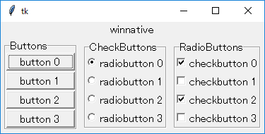 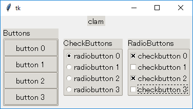
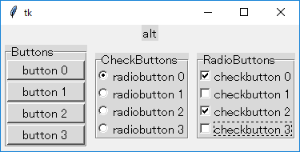 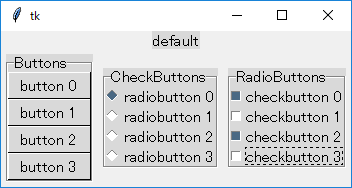
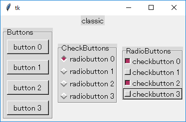 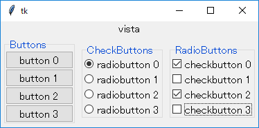
- 簡単な使用例 (2)
リスト : Ttk Widget の簡単な使用例
import tkinter as tk
import tkinter.ttk as ttk
root = tk.Tk()
style = ttk.Style()
style.theme_use('winnative')
style.configure('test1.TLabel', font = ('Ricty Diminished', 12))
style.configure('test2.TLabel', font = ('Ricty Diminished', 14), foreground = 'blue')
style.configure('test3.TLabel', font = ('Ricty Diminished', 16, 'italic'), foreground = 'green')
str = 'Hello, world, こんにちは世界'
ttk.Label(root, text = str, style = 'test1.TLabel').pack()
ttk.Label(root, text = str, style = 'test2.TLabel').pack()
ttk.Label(root, text = str, style = 'test3.TLabel').pack()
root.mainloop()
- configure(style, ...) の style には独自の名前を付けることもできる
- 名前の付け方は name.class_name (たとえば、Test.TButton など)
- Ttk Widget を生成するとき、オプション style でその名前を指定する
- 生成した widget のオブジェクトの option が value になる
- なお、Ttk Widget のコンストラクタでも font や foreground などのオプションを指定できるようだ
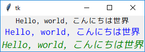
●コンボボックス
- コンボボックス (Combo Box) はエントリーとリストボックスを組み合わせたウィジェット
- 実際には、エントリーの右横に矢印があり、それをクリックするとリストボックスが表示される
- これをドロップダウンリストという
- なお、コンボボックスをドロップダウンリストと呼ぶこともあるようだ
- リストボックスから項目を選択できるほか、キーボードで独自の値を入力できる
- コンボボックスのオブジェクトは Combobox() で生成する
Combobox(widget, option = value, ...)
- Combobox は Entry のサブクラス
- Entry のメソッドやオプションを使用できる
| height | リストボックスの行数 |
| width | エントリーの文字数 |
| state | 'normal' : エントリーとリストボックスの両方から入力できる 'readonly' : リストボックスのみ有効 'disabled' : どちらも無効 |
| values | リストボックスに表示するデータを格納したタプル (またはリスト) |
- インスタンスメソッド
- current(index)
values[index] をコンボボックスの値とする。
引数なしの場合はコンボボックスの値を values から検索して位置を返す。values にない場合は -1 を返す。 - get(), コンボボックスの値を取得する
- set(item), コンボボックスの値を item にする
- 簡単な使用例
リスト : コンボボックスの使用例
import tkinter as tk
import tkinter.ttk as ttk
import datetime
root = tk.Tk()
style = ttk.Style()
style.configure('.', font = ('', 14))
label_buff = tk.StringVar()
label_buff.set('')
year_buff = tk.StringVar()
year_buff.set('1970')
month_buff = tk.StringVar()
month_buff.set('1')
day_buff = tk.StringVar()
day_buff.set('1')
la = ttk.Label(root, textvariable = label_buff)
la.pack()
ttk.Label(root, text = " 年: ").pack(side = tk.LEFT)
year_cb = ttk.Combobox(root, textvariable = year_buff, width = 8, value = tuple(range(1970, 2031)))
year_cb.pack(side = tk.LEFT)
ttk.Label(root, text = " 月: ").pack(side = tk.LEFT)
month_cb = ttk.Combobox(root, textvariable = month_buff, width = 8, height = 12, value = tuple(range(1, 13)))
month_cb.pack(side = tk.LEFT)
ttk.Label(root, text = " 日: ").pack(side = tk.LEFT)
day_cb = ttk.Combobox(root, textvariable = day_buff, width = 8, value = tuple(range(1, 32)))
day_cb.pack(side = tk.LEFT)
# 日付の確認
def check_date(y, m, d):
try:
datetime.date(int(y), int(m), int(d))
return True
except Exception:
return False
# 入力データの表示
def get_item(event):
if check_date(year_cb.get(), month_cb.get(), day_cb.get()):
label_buff.set('{} 年 {} 月 {} 日'.format(year_cb.get(), month_cb.get(), day_cb.get()))
else:
label_buff.set('Input Error')
year_cb.bind('<<ComboboxSelected>>', get_item)
year_cb.bind('<Return>', get_item)
month_cb.bind('<<ComboboxSelected>>', get_item)
month_cb.bind('<Return>', get_item)
day_cb.bind('<<ComboboxSelected>>', get_item)
day_cb.bind('<Return>', get_item)
get_item(None)
root.mainloop()
- リストボックスから項目を選択したとき、仮想イベント <<ComboboxSelected>> が生成される
- このイベントに関数 get_item() をバインドする
- エントリーでデータ入力してリターンキーを押しても ComboboxSelected は生成されない
- そこで、エントリーではイベント <Return> に get_item() をバインドしている
- get_item() は check_date() で日付が正しいかチェックしている
- datetime.date() は引数を日付型データに変換できない場合はエラーを送出する
- try - exception で例外を捕捉したら False を返す
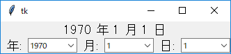 初期状態
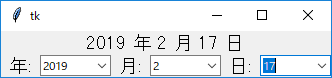 日付の入力
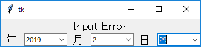 エラー
●ノートブック
- ノートブック (Notebook) は複数のウィジェットを格納し、表示するウィジェットをタブで切り替える
- タブブラウザ (Tabbed Browser) と同様の動作
- ノートブックのオブジェクトは Notebook() で生成する
- ノートブックにウィジェットを配置するにはメソッド add(widget, option = value, ...) を使う
- 追加した widget はタブ識別子として使用できる
- 整数 (0 - タブ数-1) でもよい
- 現在選択されているタブは 'current' で指定できる
- タブの名前はオプション text で指定する
- この他にも state, sticky, padding などいくつかオプションがある
- タブを選択したとき仮想イベント <<NotebookTabChanged>> が生成される
- 簡単な使用例 (1)
リスト : ノートブックの使用例 (1)
import tkinter as tk
import tkinter.ttk as ttk
root = tk.Tk()
style = ttk.Style()
style.configure("TButton", font = ('', 16))
style.configure("TRadiobutton", font = ('', 16))
style.configure("TCheckbutton", font = ('', 16))
v = tk.IntVar()
v.set(0)
opts = [tk.BooleanVar() for _ in range(4)]
for x in range(4): opts[x].set(True)
# ノートブック
nb = ttk.Notebook(root)
nb.pack()
# ボタン類の配置
f0 = ttk.Frame(root)
f1 = ttk.Frame(root)
f2 = ttk.Frame(root)
for x in range(4):
ttk.Button(f0, text = 'button {}'.format(x)).pack()
ttk.Radiobutton(f1, text = 'radiobutton {}'.format(x), value = x, variable = v).pack()
ttk.Checkbutton(f2, text = 'checkbutton {}'.format(x), variable = opts[x]).pack()
nb.add(f0, text = 'Button', padding = 20)
nb.add(f1, text = 'Radio', padding = 20)
nb.add(f2, text = 'Check', padding = 20)
root.mainloop()
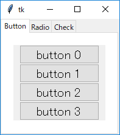 初期状態 (Button が選択されている)
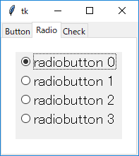 Radio を選択
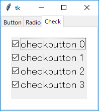 Check を選択
- 簡単な使用例 (2)
リスト : ノートブックの使用例 (2)
import tkinter as tk
import tkinter.ttk as ttk
root = tk.Tk()
root.option_add('*Text.font', ('', 14))
#style = ttk.Style()
#style.configure(".", font = ('', 12))
# 生成したテキストウィジェットの個数
text_count = 0
# ノートブック
nb = ttk.Notebook(root)
# テキストウィジェットを追加
def new_text():
global text_count
tw = tk.Text(width = 40, height = 10)
text_count += 1
nb.add(tw, text = 'Memo{}'.format(text_count))
nb.select(tw)
# テキストウィジェットを削除
def del_text():
nb.forget('current')
# ボタン
fr = ttk.Frame()
ttk.Button(fr, text = 'New', command = new_text).pack(side = tk.LEFT)
ttk.Button(fr, text = 'Del', command = del_text).pack(side = tk.LEFT)
# 配置
fr.pack(anchor = tk.W)
nb.pack()
root.mainloop()
- ボタン New を押すとノートブックにテキストウィジェットを挿入する
- ボタン Del を押すとカレントタブのテキストウィジェットを削除する
- テキストの挿入は関数 add_text() で行う
- add() で挿入しても、カレントタブは変化しない
- テキスト tw を add() で挿入したあと、メソッド select(tw) でカレントタブを変更する
- ウィジェットの削除はメソッド forget() で行う
- ウィジェットを隠すメソッド hide() もある (add() で復活する)
- この他にもタブを操作するメソッドがいろいろ用意されている
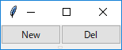 初期状態
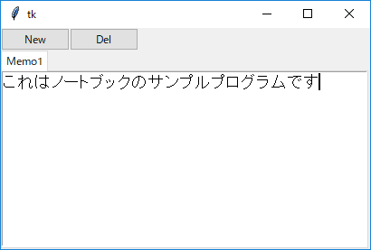 Memo1 を生成
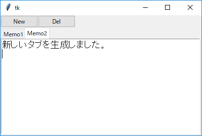 Memo2 を生成
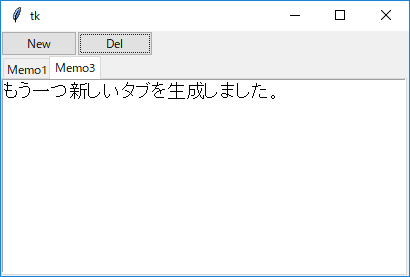 Memo3 を生成して Memo2 を削除
●プログレスバー
- プログレスバー (progressbar) は時間がかかる処理で進捗状況を表示するためのウィジェット
- 水平方向のバーで進捗率を表すものが一般的
- プログレスバーのオブジェクトは Progressbar(widget, option = value, ...) で生成する
- 主なオプション
- orient, バーの方向 ('horizontal' が水平 [デフォルト], 'vertical' が垂直)
- length, バーの長さ
- mode, 動作モード
- 'determinate', 進捗状況を確定的に表す (バーが一方向に伸びていく) [デフォルト]
- 'indeterminate', 処理が進行中であることを表す (ブロックが左右 (上下) に繰り返し移動する)
- maximum, 最大値 [デフォルトは 100]
- value, プログレスバーの値
- variable, 値を格納するオブジェクトを指定
- 値を書き換えるとプログレスバーに反映される
- メソッド
- start(msec), 自動増加モードを開始 (msec [デフォルトは 50 msec] ごとに step() を呼び出す
- step(amount), 値を amount だけ増やす (引数なしは 1.0 だけ増える)
- stop(), 自動増加モードを停止する
- 自動増加モードは indeterminate モードで使うとよい
- 簡単な使用例
リスト : プログレスバーの使用例
import tkinter as tk
import tkinter.ttk as ttk
root = tk.Tk()
var = tk.IntVar()
var.set(0)
pb1_id = None
def exec_pb1():
global pb1_id
var.set(var.get() + 1)
if var.get() < 100:
pb1_id = root.after(40, exec_pb1)
def start_pb1():
var.set(0)
exec_pb1()
def stop_pb1():
global pb1_id
if pb1_id is not None:
root.after_cancel(pb1_id)
pb1_id = None
pb1 = ttk.Progressbar(root, length = 200, variable = var)
pb2 = ttk.Progressbar(root, length = 200, mode = 'indeterminate')
pb1.pack()
f1 = ttk.Frame()
ttk.Button(f1, text = 'Start', command = start_pb1).pack(side = tk.LEFT)
ttk.Button(f1, text = 'Stop', command = stop_pb1).pack(side = tk.LEFT)
f1.pack()
pb2.pack()
f2 = ttk.Frame()
ttk.Button(f2, text = 'Start', command = lambda : pb2.start(10)).pack(side = tk.LEFT)
ttk.Button(f2, text = 'Stop', command = lambda : pb2.stop()).pack(side = tk.LEFT)
f2.pack()
root.mainloop()
- pb1 は determinate, pb2 は indeterminate で動作する
- どちらも下のボタン Start で動作開始、Stop で動作停止する
- pb2 は自動増加モードを使っている
- pb1 は関数 exec_pb1() で 40 msec ごとにプログレスバーの値を 1 増やしている
- exec_pb1() を while ループで実装すると pb1 と pb2 は平行に動作しなくなるので注意すること
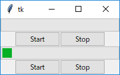 初期状態
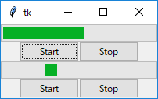 途中経過
 pb1 が終了し、pb2 を停止した状態
pb1 が終了し、pb2 を停止した状態
●ツリービュー
- ツリービュー (Tree view) は階層的なデータ構造 (木構造、Tree structure) を表示するためのウィジェット
- ツリービューの見た目は N 行 M 列の表 (table)
- 一番左側の列 (ツリーカラム) が木を表していて、残りの列はデータを表示するためのもの
- 簡単にいうと、ツリーカラムは節 (Node) を表示し、残りのカラムは葉 (Leaf) に格納されているデータを表示する
- 実際には、節にもデータを持たせることができる
- その場合は、そのデータが残りのカラムに表示される
- Tkinter のマニュアルでは節 (葉) のことを「要素」と呼んでいる
- 節を表す項目には左側に記号 (Windows の場合は +) が付いている
- それをクリックすると、記号が変化 (Windows の場合は -) して、その下に節が保持している子を表示する
- 記号を再度クリックすると表示は元に戻る
- ツリービューのオブジェクトは Treeview(widget, option = value, ...) で生成する
- オプション columns でツリーカラムを除いたカラムの名前を指定する
- これがカラム識別子 (column id) になる
- カラム識別子は整数 0 - n や文字列 '#0' - '#n' でもよい
- 0 や '#0' はツリーカラムを表す
- カラムの設定や問い合わせはメソッド column(column_id, option_name = None, option = value, ...) で行う
- 第 2 引数 option_name を指定すると、そのカラムのオプション値が返される
- 主なオプション
- id, カラム名を返す
- anchor, テキストの配置 (Tk と同じ)
- minwidth, カラムの最小幅
- stretch, True: ウィンドウをリサイズしたときカラムを引き延ばすか (True or False)
- width, カラムの幅
- xscrollcommand, yscrollcommand, スクロールバーの設定
- カラムのヘッダの設定や問い合わせはメソッド heading(column_id, option_name = None, option = value, ...) で行う
- 第 2 引数 option_name を指定すると、そのヘッダのオプション値が返される
- 主なオプション
- text, 見出し
- anchor, 見出しの配置 (Tk と同じ)
- command, 見出しをクリックしたときに呼び出されるコールバック関数
- メソッド insert(parent, index, iid = None, option = value, ...) は新しい要素を生成する
- insert() は要素の識別子を返す
- 生成した要素は親節 parent の index 番目に挿入される
- 末尾に追加する場合は 'end' を指定する
- ルートは空文字列 '' で表す
- 引数 iid は生成した要素に付ける識別子を指定する
- 主なオプション
- text, 要素の名前
- values, 要素の値を格納したタプル (or リスト)
- open, 要素の子を表示するか否か
- tags, タグ
- 簡単な使用例 (1)
リスト : ツリービューの簡単な使用例 (1)
import tkinter as tk
import tkinter.ttk as ttk
root = tk.Tk()
style = ttk.Style()
style.configure('.', font = ('', 12))
tview = ttk.Treeview(root, columns = ('Name', 'Height'))
tview.column('#0', width = 50)
tview.column('Name', anchor = 'w', width = 100)
tview.column('Height', anchor = 'e', width = 50)
tview.heading('#0', text = "クラス")
tview.heading('Name', text = "名前")
tview.heading('Height', text = "身長")
id = tview.insert('', 'end', text = 'A')
tview.insert(id, 'end', values = ('Ada', 148.7))
tview.insert(id, 'end', values = ('Hanna', 154.2))
tview.insert(id, 'end', values = ('Miranda', 148.2))
id = tview.insert('', 'end', text = 'B')
tview.insert(id, 'end', values = ('Alice', 149.5))
tview.insert(id, 'end', values = ('Janet', 147.8))
tview.insert(id, 'end', values = ('Sara', 153.1))
id = tview.insert('', 'end', text = 'C')
tview.insert(id, 'end', values = ('Carey', 133.7))
tview.insert(id, 'end', values = ('Linda', 154.6))
tview.insert(id, 'end', values = ('Tracy', 138.2))
id = tview.insert('', 'end', text = 'D')
tview.insert(id, 'end', values = ('Ellen', 157.9))
tview.insert(id, 'end', values = ('Maria', 159.1))
tview.insert(id, 'end', values = ('Violet', 138.7))
sb = ttk.Scrollbar(root, orient = 'v', command = tview.yview)
tview.configure(yscrollcommand = sb.set)
tview.pack(side = tk.LEFT)
sb.pack(side = tk.LEFT, fill = tk.Y)
root.mainloop()
- クラスごとに女生徒の名前と身長を表示する
- Treeview() の columns には ('Name', 'Height') を指定する
- column() と heading() でカラムと見出しの設定を行う
- クラスは A, B, C, D の 4 つ
- クラスを表す要素はルートに追加する
- そして、これらの要素に女生徒のデータを格納した要素を追加する
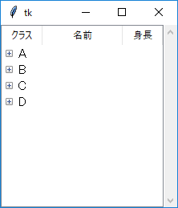 初期状態
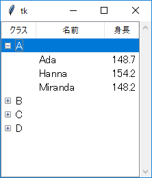 クラス A を表示
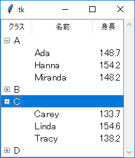 クラス A と C を表示
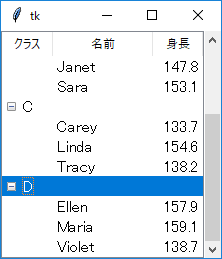 全クラスを表示
- ツリービューはマウスの左クリックで要素を選択できる
- Ctrl Key + 左クリックで複数の要素を選択
- 要素を選択したあと、Shift Key + 左クリックでその範囲の要素をすべて選択
- 要素を選択したとき仮想イベント <<TreeviewSelect>> が生成される
- 実際には、左クリックするたびにイベントが発生する
- 選択した要素はメソッド selection() で取得できる
- 返り値は要素の識別子を格納したタプル
- 要素のオプション値はメソッド item() で取得や変更ができる
- 要素のカラム値はメソッド set() でアクセスする
set(item, column = None, value = None)
- 引数 column, value を省略するとカラム識別子と値を格納した辞書を返す
- column だけを指定すると、そのカラム値
- column と value を指定すると、column の値を value に更新する
- 簡単な使用例 (2)
リスト : 身長の更新機能を追加
import tkinter as tk
import tkinter.ttk as ttk
root = tk.Tk()
style = ttk.Style()
style.configure('.', font = ('', 12))
# グローバル変数
buff1 = tk.StringVar()
buff1.set('')
buff2 = tk.StringVar()
buff2.set('')
select_item = None
fr = ttk.Frame()
ttk.Label(fr, textvariable = buff1).pack(side = tk.LEFT)
e = ttk.Entry(fr, width = 8, textvariable = buff2)
e.pack(side = tk.LEFT)
fr.pack()
tview = ttk.Treeview(root, columns = ('Name', 'Height'))
tview.column('#0', width = 50)
tview.column('Name', anchor = 'w', width = 100)
tview.column('Height', anchor = 'e', width = 50)
tview.heading('#0', text = "クラス")
tview.heading('Name', text = "名前")
tview.heading('Height', text = "身長")
id = tview.insert('', 'end', text = 'A')
tview.insert(id, 'end', values = ('Ada', 148.7))
tview.insert(id, 'end', values = ('Hanna', 154.2))
tview.insert(id, 'end', values = ('Miranda', 148.2))
id = tview.insert('', 'end', text = 'B')
tview.insert(id, 'end', values = ('Alice', 149.5))
tview.insert(id, 'end', values = ('Janet', 147.8))
tview.insert(id, 'end', values = ('Sara', 153.1))
id = tview.insert('', 'end', text = 'C')
tview.insert(id, 'end', values = ('Carey', 133.7))
tview.insert(id, 'end', values = ('Linda', 154.6))
tview.insert(id, 'end', values = ('Tracy', 138.2))
id = tview.insert('', 'end', text = 'D')
tview.insert(id, 'end', values = ('Ellen', 157.9))
tview.insert(id, 'end', values = ('Maria', 159.1))
tview.insert(id, 'end', values = ('Violet', 138.7))
sb = ttk.Scrollbar(root, orient = 'v', command = tview.yview)
tview.configure(yscrollcommand = sb.set)
tview.pack(side = tk.LEFT)
sb.pack(side = tk.LEFT, fill = tk.Y)
# 生徒の選択
def select_student(event):
global select_item
x = tview.selection()[0]
d = tview.set(x)
if d:
buff1.set(d['Name'])
buff2.set(d['Height'])
select_item = x
else:
buff1.set('')
buff2.set('')
select_item = None
# 身長の更新
def update_height(event):
if select_item:
tview.set(select_item, 'Height', buff2.get())
# バインディング
e.bind('<Return>', update_height)
tview.bind('<<TreeviewSelect>>', select_student)
root.mainloop()
- 身長を更新する機能を追加する
- 生徒を選択すると、ラベルに名前を、エントリーに身長を表示する
- エントリーで身長を書き換えてリターンキーを押すと、ツリービューの値が更新される
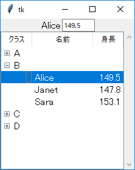 Alice を選択
エントリーで身長を入力
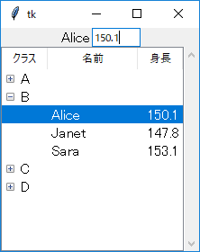 リターンキーで更新